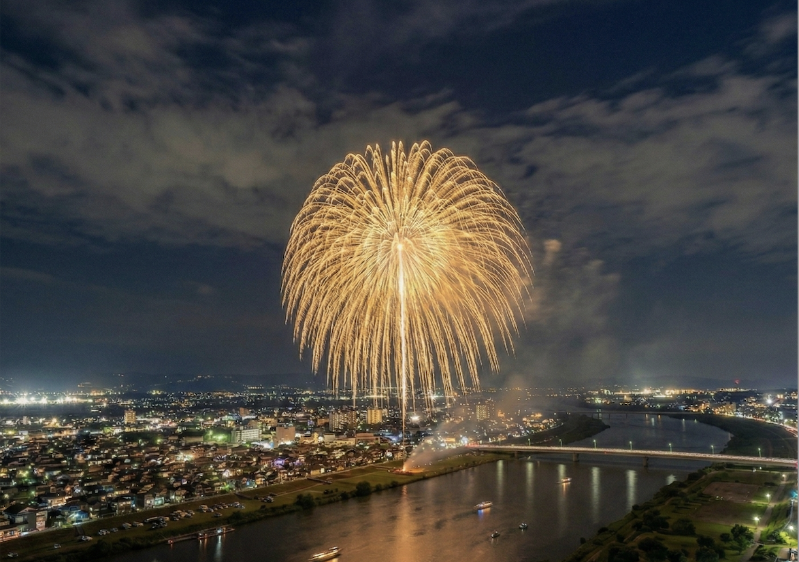
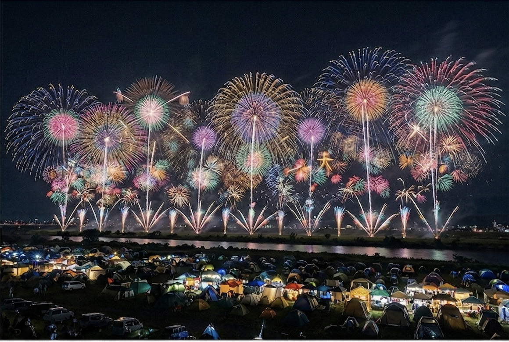
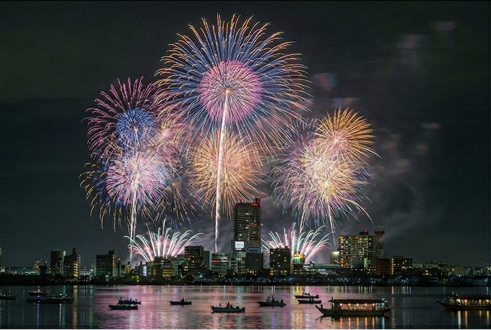

Mark your calendar for these special festivals

First started in 1946 as a war-damage reconstruction event to mourn the deceased of WWII, the Nagaoka Fireworks Festival in Niigata Prefecture carries on the spirit of Japan through the decades.

Witness breathtaking fireworks explode above accompanied by stories and music, which brings the show of light and sound together in a friendly festival setting at the end of August in the Daisen area.

Tsuchiura All Japan Fireworks Competition is held every year in early November, to celebrate autumn harvest and thank farmers for their important work.